This homework is to be done in teams of two. You're welcome to discuss with other students, but all submitted work must be original and your own. If you use a solution from another source you must cite it — this includes when that source is someone else helping you.
Link to a homework3.zip file containing support files to use as a starting point.
Zip all the files needed to show your work in a file homework3.zip.
Make sure one of the files is a README text file listing the members of your team, as well as any remarks you want to make about your code.
Last step TBA
In this homework, you'll practice working with JavaScript to modify the DOM, and working with events.
When developing code for your question, feel free to do whatever you want in terms of HTML document. But for final submission, note that in question 4 I ask you to basically put all of your code in one single document that showcases all the things you've implemented.
This homework is much laxer in terms of specifications for what I'm asking you to build. You have a lot of freedom. At the end of the day, I will care about whether or not you provide the functionality that I ask, and also whether things look good.
Please only use pure JavaScript — no frameworks or libraries. If in doubt, ask.
Code a function makeTable(id, headers, rows) that creates an HTML table from the data provided.
Argument id should be the ID of an empty <table> element in the document that you will fill with rows programmatically. Argument headers should be an array of strings giving the name of each column header of the created table. Argument rows should be an array of rows, where each row is itself an array of values.
For example, if your document has an element:
<table id="test-table"></table>then running
makeTable('test-table', ['Name', 'Age', 'Profession'], [['Alice', 25, 'Software Engineer'], ['Bob', 30, 'Builder'], ['Charlie', 21, 'Painter'], ['Darlene', 32, 'Singer']])should produce the table:
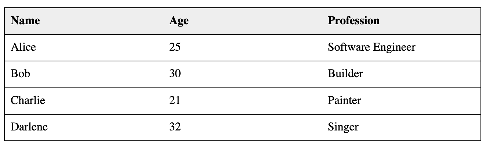
Code a function makeSortableTable(id, headers, rows) that creates an HTML table from the data provided, just like in Question 1. Same arguments, same meanings.
The difference is that when you click on any of the column headers of the created table, the rows of the table should sort themselves by the value of that column, in ascending order.
There should be a visual indication of which column is being used as the sorting column.
As in Question 1, if your document has an element:
<table id="test-table"></table>then running
makeSortableTable('test-table', ['Name', 'Age', 'Profession'], [['Alice', 25, 'Software Engineer'], ['Bob', 30, 'Builder'], ['Charlie', 21, 'Painter'], ['Darlene', 32, 'Singer']])should produce the following table if you click on column header Profession:
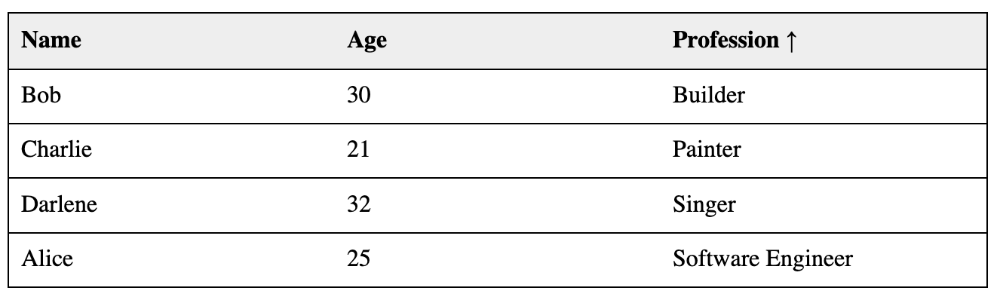
If you can, add an additional functionality to the sortable table: when you click on the column header that is currently being used for sorting, the sorting order should flip from ascending to descending, or from descending to ascending. Again, there should be a visual indication of the sorting order. (HTML entities &uparr; and &downarr; are good candidates.)
In the above example, if you click on column header Name twice to get descending order, you should produce a table such as:
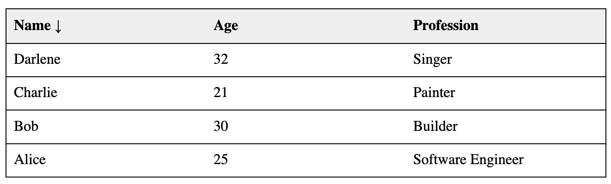
Code a function makeFilterableList(filterId, listId, items) that creates a filterable list of items, that is, a list associated with an input element such that when you start typing into the input element, the list keeps only the items whose content has text that matches what the input element contains. (When the input element is empty, this should correspond to "no filtering".) Filtering should happen on every keystroke.
Argument filterId should be the ID of an input element in the HTML document to be used to enter the filtering text. Argument listId should be the ID of an element that will hold the list of items. (It can be an actual list, it can be a div, it can be anything you want. The items in the list can also be anything you want. Either way, you should be able to use styling to make it look roughly however you want.) Argument items should be an array of strings representing the content of the items in the list, the content into which you'll search for the text in the input box.
For example, if your document has an element:
<label for="filter-input">Filter:</label>
<input id="filter-input" type="text">
<div id="filter-list"></div>then running
makeFilterableList('filter-input', 'filter-list', ['This is the first item', 'This is the second item', 'This is the third item', 'This is the fourth item but also not the first, right?'])should produce the following sequence, if you start typing first ix:
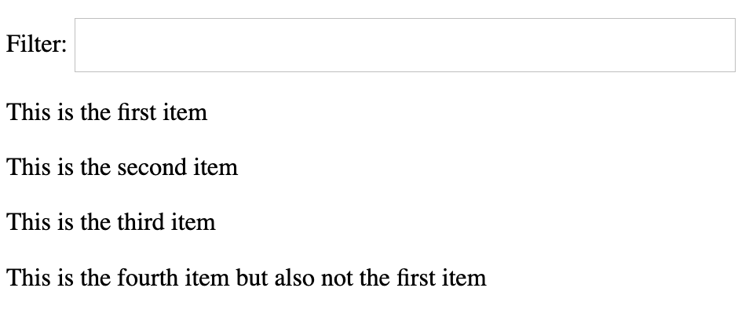
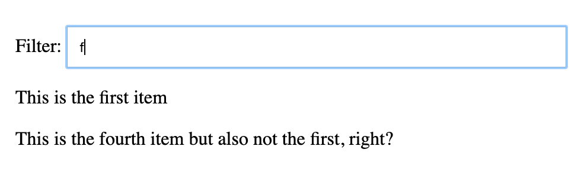
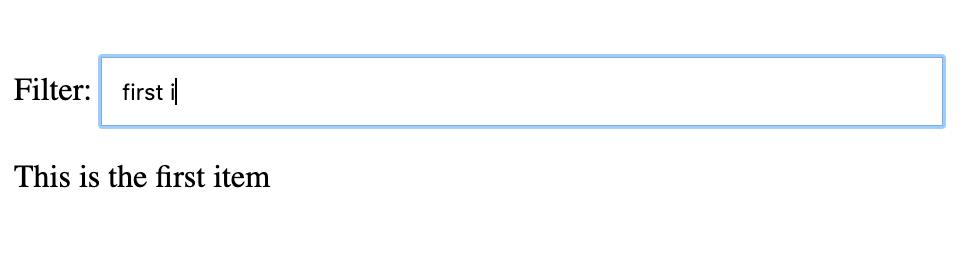
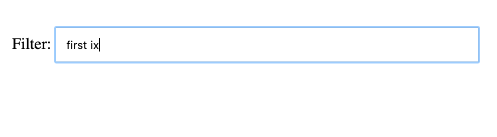
Put your responses to Questions 1 – 3 together into a single document that mimics a "tabbed" page: there should be three tabs labeled Question 1, Question 2, Question 3 (styled however you want) such that when you click on one of the tabs, your answer to Question 1, Question 2, or Question 3 (respectively) shows on the page. The tabs should give an indication of which tab is the "active" one.
I've given you a super-bare bones shell homework3.html that you can use. It loads a file homework3.js that has a few globals that you will need: sampleTableHeaders, sampleTableData, and sampleItems.
The tab for Question 1 should show a table constructed with your makeTable function on inputs sampleTableHeaders and sampleTableData.
The tab for Question 2 should show a sortable table constructed with your makeSortableTable function on inputs sampleTableHeaders and sampleTableData.
The tab for Question 3 should show a filterable list constructed with your makeFilterableList function on input sampleItems.
Try to make it look reasonably good by styling elements appropriately.
Here are snapshots of my three tabs. Yours don't have to look like this. Moreover, for obvious reasons, I can't link you to the page:
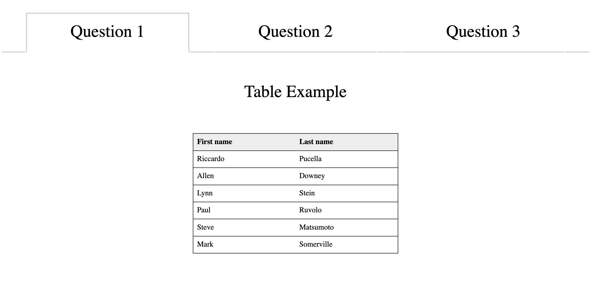
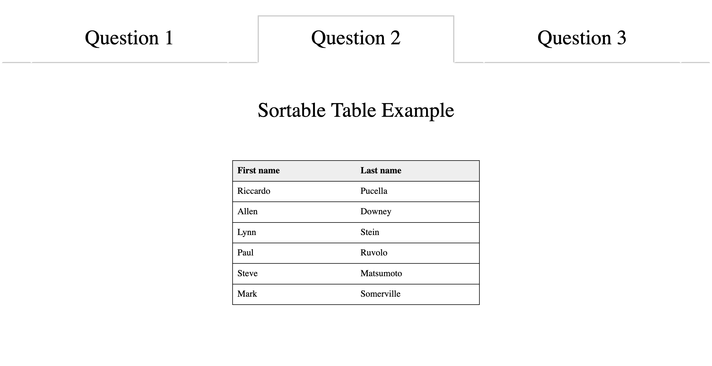
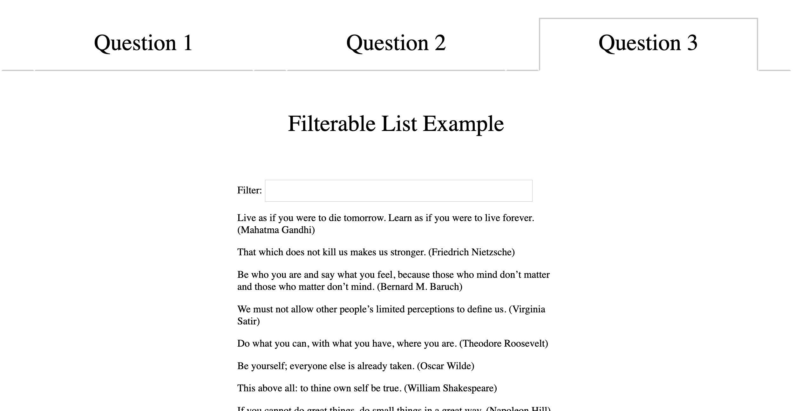
Code a function makeEditableTable(id) that allows you to edit the cell content an existing HTML table.
Argument id should be the ID of an existing <table> element in the document with some content.
The result of running this function should be to setup the table indicated by the supplied ID so that if you click on any of the cells of the table (don't worry about header cells, just the <td> cells of the body of the table), you get a way to edit the content of the cell, and then replace the original content of the cell with what you've entered. I don't particularly care how you get input from the user, as long as it's somewhat natural. In my example below, I create and overlay an input box over the cell that you click on using the position CSS property, but you don't have to do it that way.
Do not use property contenteditable. It actually does a lot more, and is more difficult to control. I want you to figure out a way in which you can achieve editability without relying on browser-based editability.
For example, if your document has an element:
<table id="test-table">
<thead>
<tr>
<th>Name</th>
<th>Age</th>
<th>Profession</th>
</tr>
</thead>
<tbody>
<tr>
<td>Alice</td>
<td>25</td>
<td>Software Engineer</td>
</tr>
<tr>
<td>Bob</td>
<td>30</td>
<td>Builder</td>
</tr>
<tr>
<td>Charlie</td>
<td>21</td>
<td>Painter</td>
</tr>
<tr>
<td>Darlene</td>
<td>32</td>
<td>Singer</td>
</tr>
</tbody>
</table>then running
makeEditableTable('test-table')should produce a table that you can edit to change, say, Singer to Teacher:
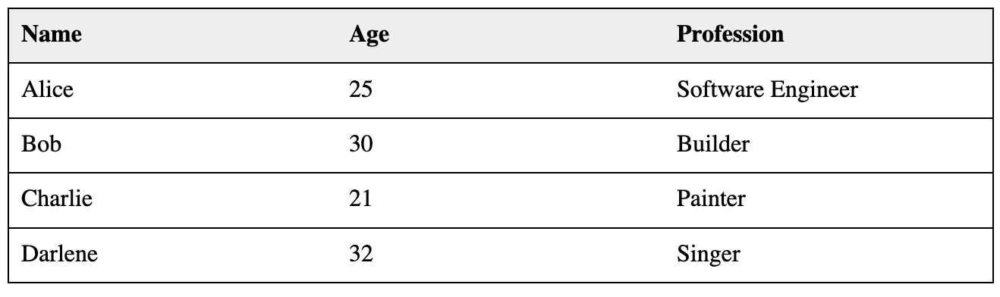
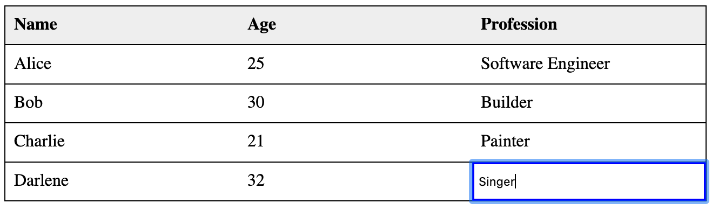
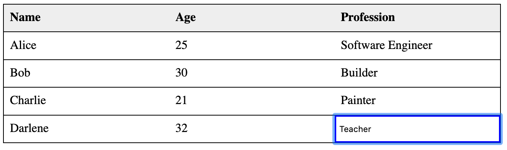
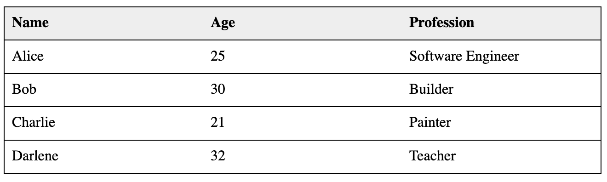
Add your Editable Table example to the document you created for Question 4 above, adding a new tab "Question 5":
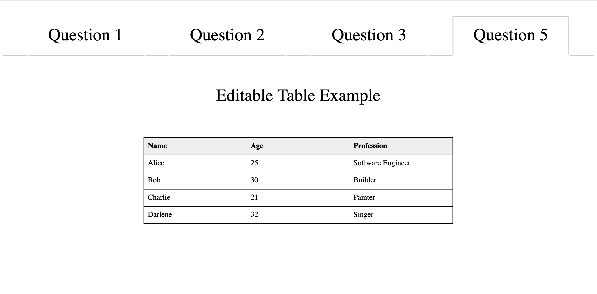